图解git原理
cpp软件架构狮 2018-10-08 20:45:19
目录
正文
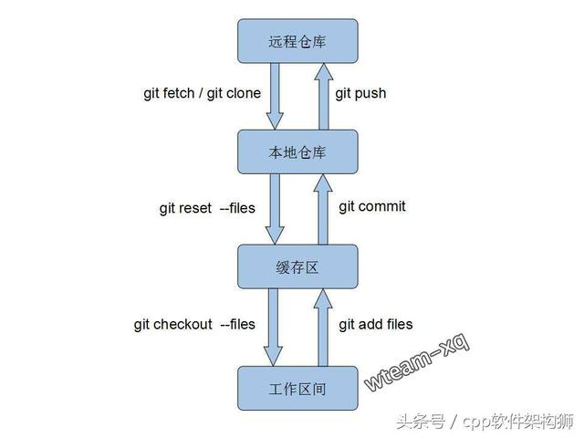
本文背景，在实际项目中使用git已有一年，发现不少同事虽然会使用常用git指令，但并不理解每个指令对应的作用原理。今天静下心总结下git 的基本理解：代码的存在区域；本文以实际项目出发，理清使用git过程中，代码的迁徙流程。
git跟传统的代码管理器（如:svn）不同， 主要区别在于git多了个本地仓库以及缓存区，所以即使无法联网也一样能提交代码。术语解释：
工作区间: 即我们创建的工程文件， 在编辑器可直观显示；
缓存区: 只能通过git GUI或git shell 窗口显示，提交代码、解决冲突的中转站；
本地仓库: 只能在git shell 窗口显示，连接本地代码跟远程代码的枢纽，不能联网时本地代码可先提交至该处；
远程仓库: 即保存我们代码的服务器，本文以公共版本控制系统：github为例，登录github账号后可直观显示；
接下来， 我们以三个实际操作的例子讲解git的日常，代码如何在上述4个区域流动。
回到顶部
1.提交 代码到远程仓库
首先在本地工作区间创建一个新工程：testGit，然后在项目里新建一个README.md， 工作区间的工程如下：
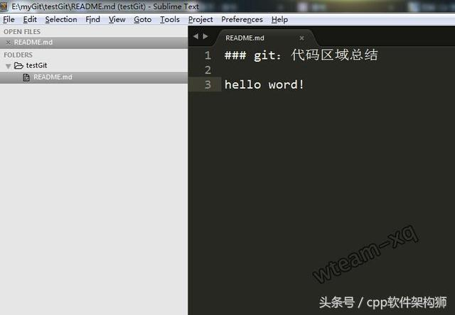
远程仓库创建一新工程，具体操作参见 如何在window上把你的项目提交到github
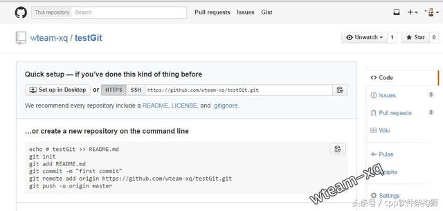
将该新建的工程提交至远程仓库，关键的git 指令如下：
git init
git add README.md
git commit -m "首次提交代码"
git remote add origin https://github.com/wteam-xq/testGit.git
git push -u origin master
指令解释：
`git init ` 表示在当前的项目目录中生成本地的git管理；
`git add README.md` 将“README.md”文件保存至缓存区，实际开发中一般使用 `git add -A`，使用-A:将新增、删除、修改的文件改动全保存至缓存区；
`git commit -m "first commit"` 将代码从缓存区保存至本地仓库，实际开发中一般使用`git commit -am "说明的文字"`，使用 -a：如果没文件更改操作（增、删、改名）就可以省略git add指令；
`git remote add origin https://github.com/wteam-xq/testGit.git`将本地仓库与指定的远程仓库创建 联系；
`push -u origin master` 将本地仓库代码推送至远程仓库，实际开发中 该指令后需要输入github 账号以及密码。（首次提交注意别遗漏`-u`指定默认主机）
以上指令正常执行后， 本地仓库的代码就提交到远程仓库了：
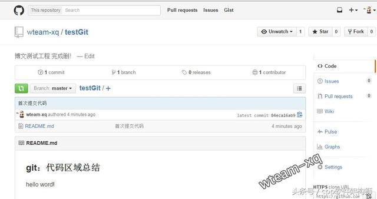
原理图如下：
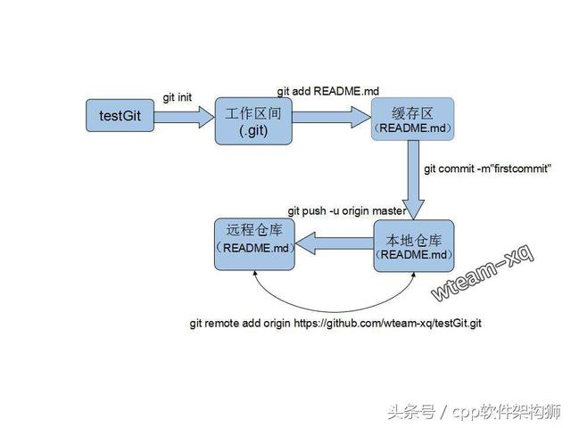
回到顶部
2.将远程仓库代码更新到本地
首先我们新建一文件夹：copyTestGit，进入该文件夹后使用git 指令：
git clone https://github.com/wteam-xq/testGit
指令执行完毕后， 就在该文件夹下生成一份副本啦（相当于多人协作时另一台设备上的工程文件），原理图如下：
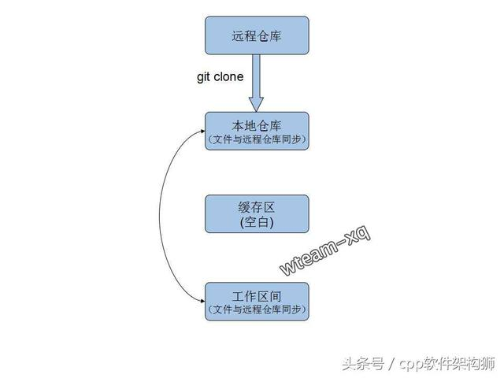
接下来， 讨论`git pull`、 `git fetch` 、 `git merge`的关系
先抛简单结论:
git pull
#等同于下面命令
git fetch
git merge
实际项目：我们在testGit工程中修改README.md,然后更新、提交下代码 执行以下git 指令(日常使用中会用`git status`看看是否有文件需要`git add`)：
git commit -am 'update readme.md'
git push origin master
原理图如下：
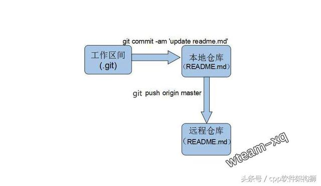
远程仓库代码更新后， 我们进入另一本地仓库：copyTestGit estGit，将远程仓库的代码更新至该本地仓库。
在该目录下输入以下git指令：
git fetch
git merge origin/master
日常使用图方便一般都是直接：
git pull
以上指令的详细探讨请看 少用pull,多用fetch 和 merge
（注意: 本文注重git工作原理图不考虑多分支情况，且使用了git clone所以副本工程已经跟主分支建立了追踪关系，所以'pull' 'fetch' 后都不接分支代码 ）
以上指令区别的原理图：
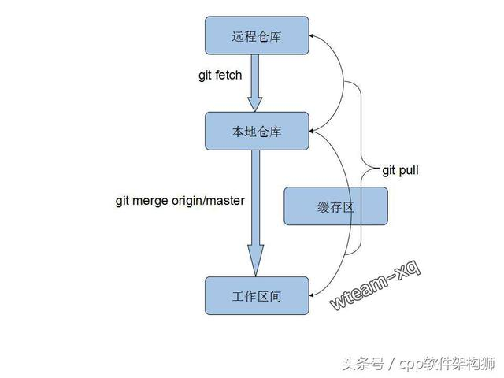
回到顶部
3.更新到本地仓库时， 出现冲突，解决冲突
首先， 我们先重现下出现冲突的情况； 在testGit目录下先修改README.md文件第三行，hello word 修正为 hello world：
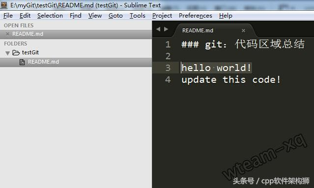
提交该修改到远程仓库（提交细节参照前述步骤）：
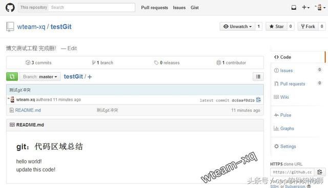
然后， 在副本工程copyTestGit/testGit 目录下也修改README.md文件第三行，hello word 修正为 hello world2：
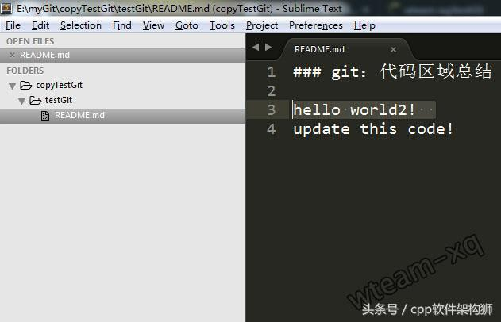
现在副本工程修改完了代码打算提交，提交前先将远程仓库最新代码更新至本地仓库, 惯例使用指令:
git pull
指令执行之后会发现以下冲突提示：
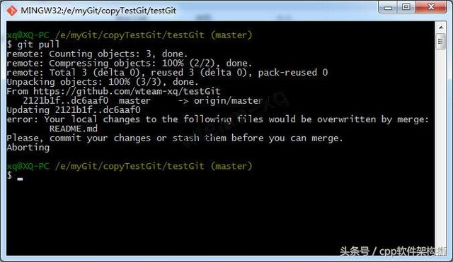
出现以上提示， 说明本次更新代码失败；主要在于本地工作区间跟远程仓库的新代码冲突了， 图解如下：
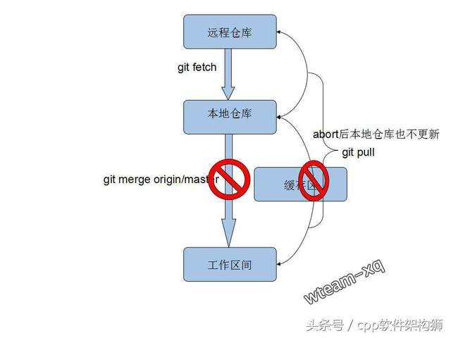
接下来，有两种方式处理冲突: 放弃本地修改或 解决冲突后提交本地修改
3.1 放弃本地修改
放弃本地修改意味着将远程仓库的代码完全覆盖本地仓库以及本地工作区间， 如果对git的指令不熟悉那大可以将本地工程完全删除，然后再重新拷贝一次（`git clone`）。
当然， git如此强大没必要用这么原始的方法，可以让本地仓库代码覆盖本地修改，然后更新远程仓库代码；
本地仓库代码完全覆盖本地工作区间，具体指令如下：
git checkout head .
(注意： 别遗漏 "head" 后的 " ." )
然后更新远程仓库的代码就不会出现冲突了:
git pull
原理图如下：
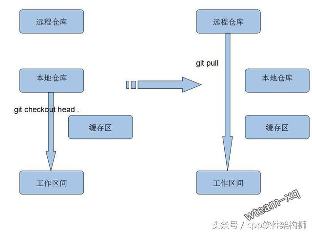
3.2 解决冲突后提交本地修改
覆盖本地代码解决冲突方法适合不太懂git的菜鸟， 像我这种git老鸟（其实并不是(￢_￢)）当然用更高级的git指令解决冲突。
细心的同学或许已发现，缓存区 除了开始出现外，后续提交代码、更新代码篇章都在打酱油；终于，这次冲突解决事件， 它将会是主角!
解决冲突后提交本地修改的思路大概如下：
将本地修改的代码放在缓存区， 然后从远程仓库拉取最新代码，拉取成功后再从缓存区将修改的代码取出， 这样最新代码跟本地修改的代码就会混杂在一起， 手工解决冲突后， 提交解决冲突后的代码。
原理图：
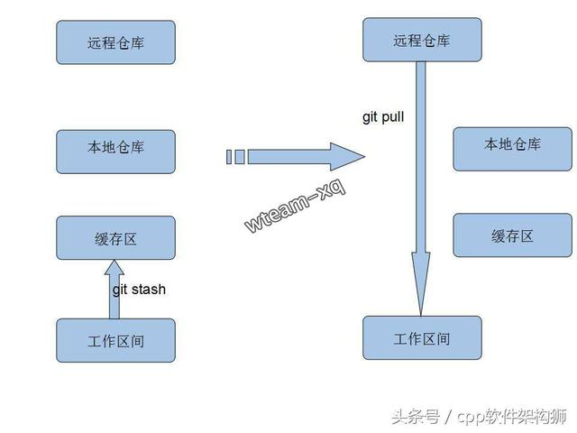
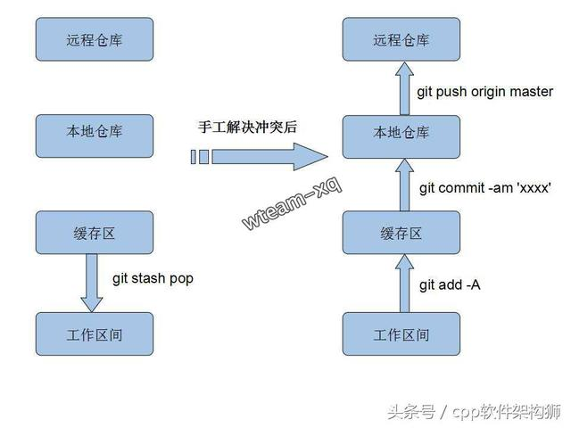
对应到我们实际项目中， 进入 copyTestGit/testGit 执行指令`git pull`出现 (重回到上述冲突场景)
error: Your local changes to the following files would be overwritten by merge:
README.md
Please, commit your changes or stash them before you can merge.
Aborting
将本地修改放入缓存区(成功后本地工作区间的代码跟本地仓库代码会同步)， 具体指令：
git stash
从远程仓库获取最新代码，具体指令：
git pull
然后， 取出本地修改的代码， 具体指令:
git stash pop
然后， git 自动合并冲突失败， 冲突的代码就很清晰的展现在我们面前了：
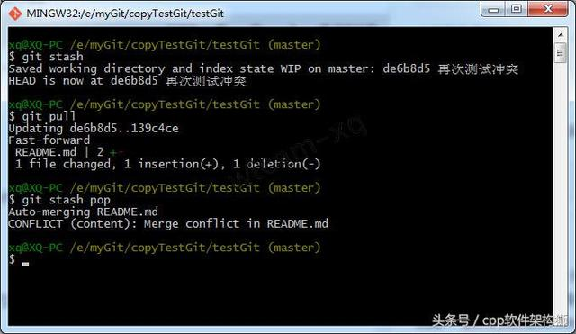
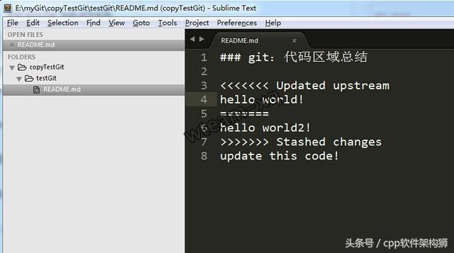
（小广告：3.2栏更多细节请移步本人另一博文git 代码冲突处理）
手工解决冲突：
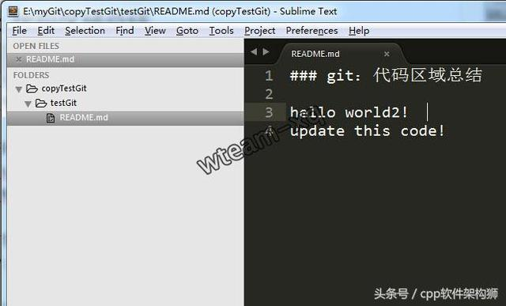
告诉git， 这个文件（README.md）的冲突 已经解决:
git add README.md
提交代码（细节参考前述流程）：
git commit -am '终于解决冲突啦！'
git push origin master
于是本地有冲突的代码就提交成功啦！
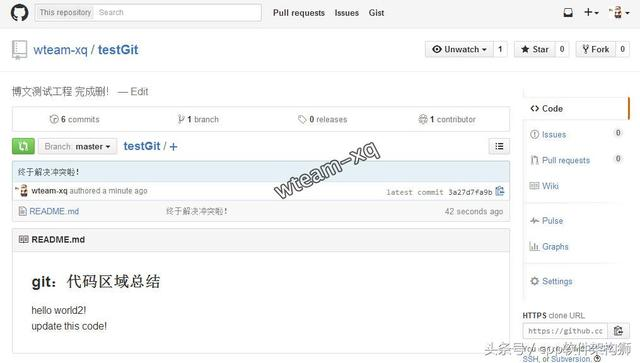
回到顶部
后记：
以上很多git指令适合在无图形化界面的linux中使用（例如：阿里云服务器操作git）， 实际开发中当然是用图形化界面解决!
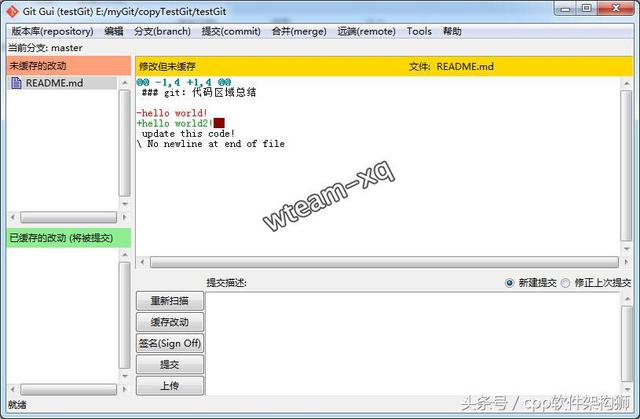
解决冲突之覆盖本地代码对应的是： 工程目录下tortoiseGit(git 小乌龟) “Revert” ：
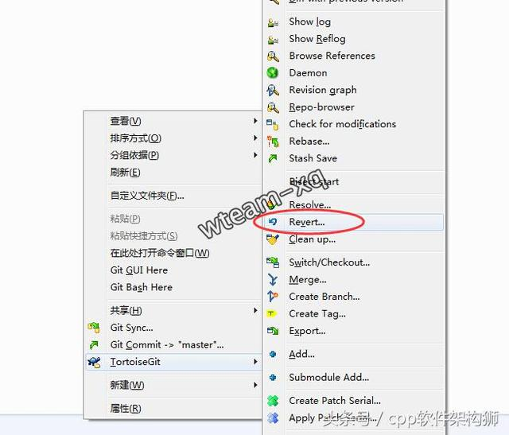
解决冲突之解决冲突后提交本地修改对应的是： 手工合并冲突代码后，工程目录下tortoiseGit(git 小乌龟) “resolve” ：
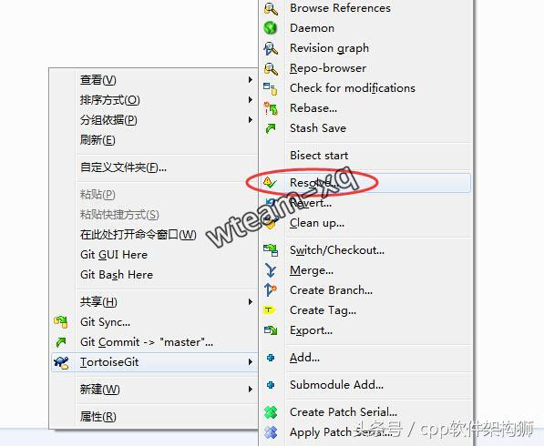
来源：https://www.cnblogs.com/cb0327/p/5066685.html
作者：灰太郎^_^